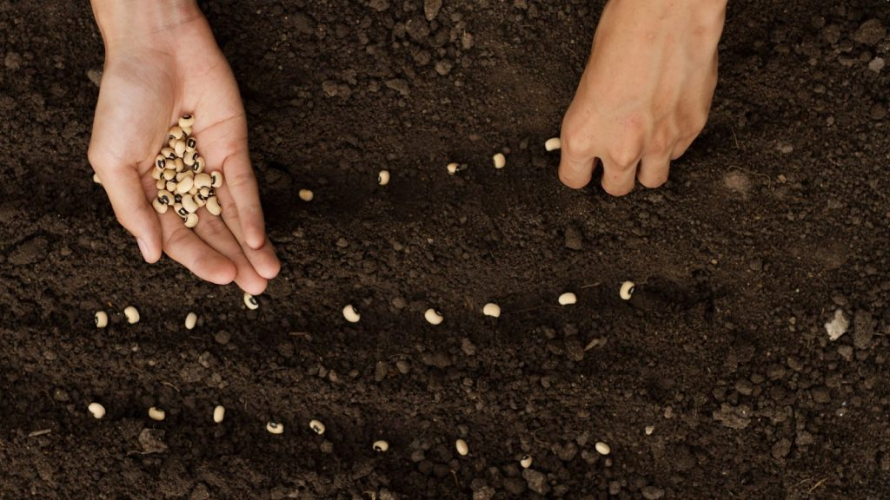

BENEFITS OF SEEDING IN MARKETING CAMPAIGNS
Seeding is a highly important marketing strategy when it comes to building brand image and attracting customers to your business.
When used effectively, it can be a powerful tool that helps your marketing campaign achieve impressive sales results.
So, why should businesses implement seeding right now? Let's explore the answers with BrandC through this article.
What is Seeding?

Seeding literally means “planting seeds.” The seeding process involves creating posts or conversations that intentionally generate interaction,
engagement, and lively discussions about a product or service. This plays a major role in building brand awareness and spreading key messages
that businesses want to deliver to their target customers.
Think of your content and message as a seed. To grow into a fruitful result, it must go through a nurturing process—planting, caring, fertilizing, watering, etc.
The person who "plants" the seed is called a seeder, and the “fruit” symbolizes the goals and outcomes a business hopes to achieve through its marketing campaign.
Seeding is one of the most essential steps to make that success happen.
4 Reasons Why Businesses Should Invest in Seeding Strategy Now
1. Increase Brand Awareness
Seeding is an effective tool that helps bring your brand closer to your customers. Your brand identity becomes clearer and more consistent,
leaving a lasting positive impression. In the long run, well-executed seeding not only increases credibility and service/product quality
but can also help businesses build a strong and loyal customer community.
2. Take Control in Media Crises
Media crises are risks that businesses are constantly exposed to. They can be caused by internal mistakes or indirectly by competitors.
If not handled promptly and wisely, these crises can cause serious damage—or worse, lead to a business being excluded from the market,
especially considering the overwhelming power of social media today.
At times like this, seeding becomes a “guardian angel” for businesses, helping neutralize negative comments and reactions,
calm public opinion, and regain control of the narrative. This buys the business valuable time to work out the best solution to the issue at hand.
3. Increase Traffic
From high-quality seeded conversations and posts, customers will gain insights and be directed to your brand’s communication channels
such as websites, fanpages, or landing pages. This significantly boosts website traffic, followers, and engagement—effectively serving your marketing goals.
4. Drive High Conversion Rates
Through vibrant social media discussions and interactions, the standout features and messages of your products or services
are spread to more customers—including those who may have never heard of your brand before. This helps expand your customer base,
boost sales, and increase the profits your business aims for.
Conclusion
In summary, seeding is a critical and indispensable step in any marketing campaign. Hopefully, through this article,
BrandC has helped you gain a comprehensive understanding of how seeding works and the immense benefits it offers to businesses
in today’s rapidly evolving digital age.